- A
 A. V. Krishnammachar
A. V. Krishnammachar- Achutha Dasa
- 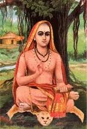 Adishankara
- Agasthiyar
- Alathur Vijayakumar
 Ambi Dikshitar
Ambi Dikshitar- 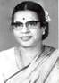 Ambujam Krishna
- 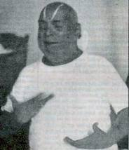 Anai Ayya
- Anai Vaidyanatha Iyer
- Anayampatti Adhisheshayyar
 Andal
Andal- 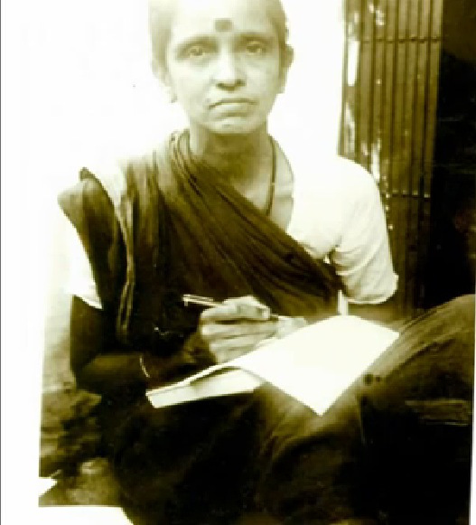 Andavan Pitchai
- Annamalai Reddiar
- Annaswamy Sastry
- 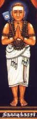 Appar Thirunavukarasar
- Appayya Dikshitar
- Arulavan
- 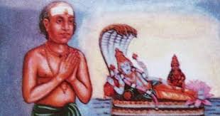 Arunachala Kavirayar
- 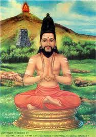 Arunagirinathar
- Ashok Madhav
- Atma K. Venkataraman
- B
- C
- D
- E
- F
- G
- H
- I
- J
- K
- K M Soundaravalli
- K. C. Kesava Pillai
 K. Ramaraj
K. Ramaraj- K. S. Raghunathan
- K. V. Srinivasa Iyengar
 Kabir Das
Kabir Das- Kadalur Subramaniam
 Kalki Krishnamoorthy
Kalki Krishnamoorthy- Kalyani Varadarajan
- Kamalesha Vittala
- 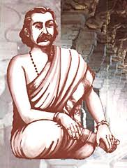 Kamban
 Kanaka Dasa
Kanaka Dasa- Kannan Iyengar
- Karur Devudu Iyer
- Karvetnagar Sarangapani
- Kavi Mathrubudaya
- Kavignar Vaali
- Kavikunchara Bharathi
- 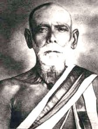 Koteeswara Iyer
- Kottavasal Venkataramana Iyer
 Kovai Subri
Kovai Subri- 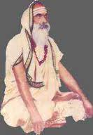 Kovoor Veeraraaghava Sharma
- Krishnaswamy Iyer
- 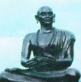 Kshetragna
 Ku. Sa. Krishnamoorthy
Ku. Sa. Krishnamoorthy- 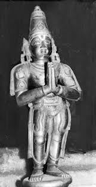 Kulashekhara Azhwar
- Kumara Etendra
- Kunnakudi Krishna Iyer
- Kuppuswamiah
- L
- M
 M. Balamurali Krishna
M. Balamurali Krishna M. D. Ramanathan
M. D. Ramanathan M. Dandapani Desikar
M. Dandapani Desikar- M. P. Sivan
 M. S. Gopalakrishnan
M. S. Gopalakrishnan- M. Sabhapati Shivan
- Madurai Mariappa Swamigal
- Madurai N. Srinivasan
 Madurai Somu
Madurai Somu- Madurai V. Krishnaswami
- Mahakavi Kalidas
 Maharajapuram Santhanam
Maharajapuram Santhanam- 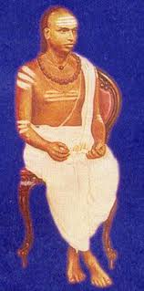 Mahavaidyanada Sivan
- Manakkal Varadarajan
- Manavachavadi Venkatasubbu Iyer
- Manikavachagar
- Mannargudi Sambasiva Bagavathar
 Marimuthu Pillai
Marimuthu Pillai- Mayavaram Vedanayakam Pillai
- Mayavaram Viswanatha Sastry
- Mazhavai Cidambara Bhaarati
- Meera Bhai
- Melputhoor Narayana Bhattathri
- Misu Krishna Iyer
- Mu Arunachalam Pillai
- Munipalle Subramanya Kavi
- Muthu Thandavar
 Muthuswamy Dikshitar
Muthuswamy Dikshitar Mysore Sadasiva Rao
Mysore Sadasiva Rao Mysore Vasudevacharya
Mysore Vasudevacharya
- N
- O
- P
- Pallavi Gopalaiyer
- Pallavi Seshayya
 Papanasam Sivan
Papanasam Sivan- Papavinacha Mudaliar
- Parameswara Bagavathar
 Patnam Subramanya Iyer
Patnam Subramanya Iyer- 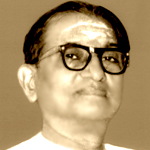 Periaswamy Thooran
- Periyazhwar
- Pichimiriyam Adiyappaya
 Ponniah Pillai
Ponniah Pillai- Pranesh Vittala Dasa
- Prathivadhi Bhayankaram Anna
- Prayaga Rangadasu
 Puducode Krishnamoorthy
Puducode Krishnamoorthy- Puliyur Doraiswamy Iyer
 Purandara Dasa
Purandara Dasa
- R
- S
- S. Aravamudhachariar
- S. Dayananda Saraswathi
 S. Kalyanaraman
S. Kalyanaraman S. Ramanathan
S. Ramanathan Sadasiva Brahmendra
Sadasiva Brahmendra- Sambandar
- Sant Tukaram
- Setumaadhava Rao
- Shankaradas Swamigal
- Shatkala Narasiah
- Shridhara Vittala Dasa
- Shuddhananda Bharathi
 Sikkil Sisters
Sikkil Sisters- Sitaramayya
- Sivanamayogi
- Spencer R. Venugopal
 Sreemushnam Rajarao
Sreemushnam Rajarao- Srirangam Moolaiveettu Rangasvami Nattuvanaar
- Srirangam Rangasvami Pillai
- 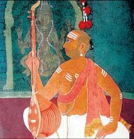 Subbarama Dikshitar
- Subbaraya Shastry
 Subramanya Bharathiyar
Subramanya Bharathiyar Suguna Purushothaman
Suguna Purushothaman- Sundarar
- 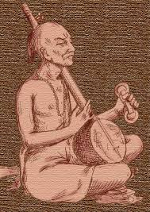 Surdas
- Swami Brahmananda
- 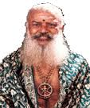 Swarna Venkata Dikshitar
- 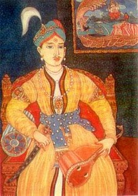 Swathi Thirunal
- 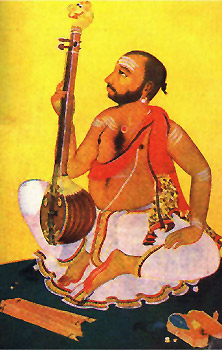 Syama Sastry
- T
 T. K. Govinda Rao
T. K. Govinda Rao T. M. Thiagarajan
T. M. Thiagarajan T. N. Bala
T. N. Bala T. N. Seshagopalan
T. N. Seshagopalan T. R. Subramanian
T. R. Subramanian T. V. Gopalakrishnan
T. V. Gopalakrishnan- Tachur Singarachari
- 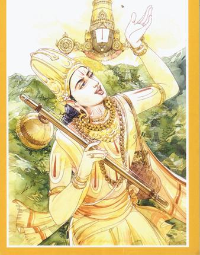 Talapakkam Annamacharya
 Tanjore Shankara Iyer
Tanjore Shankara Iyer- Tarangapadi Panchanada Iyer
- Tenmadam Narasimachari
- Thirugnana Sambandar
- Thirugokarnam Vaithiyanatha Bhagavathar
- Thirumangai Azhwar
- Thirupathi Narayanaswamy
- Thiruppaan Azhwar
- Thiruppayanam Pancapakesha Shastri
 Thiruvalluvar
Thiruvalluvar- Thiruvarur Ramaswamy Pillai
- Thiruvisanallur Venkatarmana Iyer
- Thiruvottiyur Thyagayya
- Thondaradipodi Azhwar
- 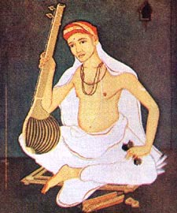 Thyagaraja
 Tiger Varadachary
Tiger Varadachary- Tiruchi G Thyagarajan
- Tiruppanandal Pattabhiramayya
- Tulasivanam
 Tulsidas
Tulsidas
- U
- V
- V. R. Gopala Iyer
 V. V. Shrivatsa
V. V. Shrivatsa V. V. Subramaniam
V. V. Subramaniam- Vadhiraja Theertha
- Vadivelu Pillai
- Vaidheeswaran Kovil Subbarama Iyer
- Vanamalai Jeeyar Swamigal
- Veda Vyasa
- Vedanta Desikan
- Veena Kuppaiyer
 Veena Raja Rao
Veena Raja Rao- 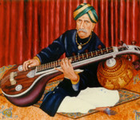 Veena Sheshanna
- Veena Subbanna
- Venkata Dasa
- Vijaya Vittala Dasa
- Vijayagopalaswami
 Vishnu Digambar Paluskar
Vishnu Digambar Paluskar- Vyasaraya Thirtha
- W
- Y